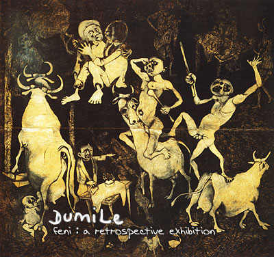

African Guernica
(no date)
Charcoal on paper
330 x 270 cm
Background
The Dumile Feni Foundation was established in 2004 but the discussion regarding its formation started amongst his family, friends and members of the foundation soon after Dumile’s untimely and tragic death in New York 1991.
The principle aim of the Foundation is to promote the work of Dumile Feni and to ensure that his contribution as one of Africa’s greatest artists and cultural and human rights activists is celebrated and critically appraised.
The Foundation believes that Dumile’s legacy must live not only through the preservation of his work but by actively promoting the arts and supporting artists. Research needs to be promoted as well as critical discourse on the role of the artist in the creation of culture, identity and the promotion of human rights and global understanding.
Dumile the untold story
Huge gaps exist in our understanding of Dumile’s life and the extent of his work. For personal and political reasons he created a number of narratives about his life and his nomadic existence under apartheid and in exile meant that no comprehensive record of his life and work exists.
One of the first tasks of the Foundation is to put in place a research programme to identify his work and build an accurate picture of his life. The Foundation welcomes contributions and recollections from friends, comrades and family members.
This website will be used to publish Dumile's work and to provide a platform for like-minded artists to express their views.